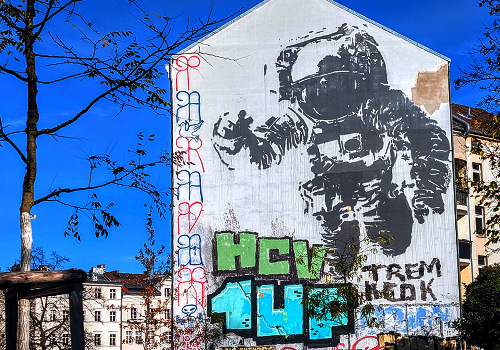
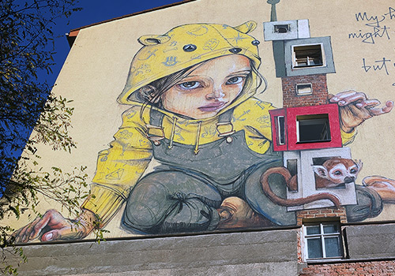

 Who is the artist of this mural? Herakut Victor Ash Invader Correct answer! The mural was created by Victor Ash. Try again Next Question #astronaut #mural #kreuzberg
 Who is the artist of this mural? Herakut ROA FinDac Correct answer! The mural was created by Herakut. Try again Next Question #home #mural #berlin